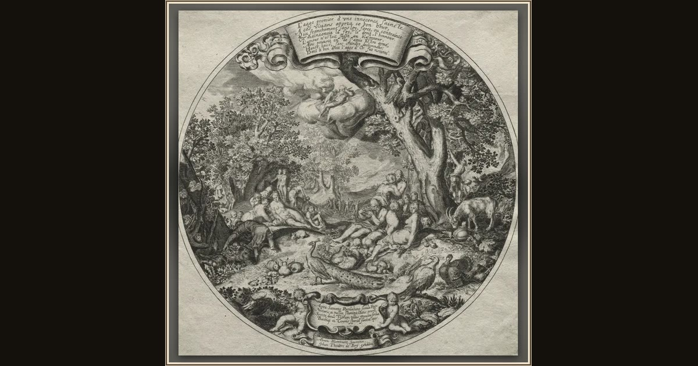

The Golden Age
Johann Theodor de Bry (German, 1561–1623) · 1608 · cma
De Bry’s roundel shows people reclining beneath trees among animals, recalling the golden race whom Hesiod says lived like gods during Cronos’s reign (110–114) Explore its place in Hesiod's Poems, Works and Days, line 110.